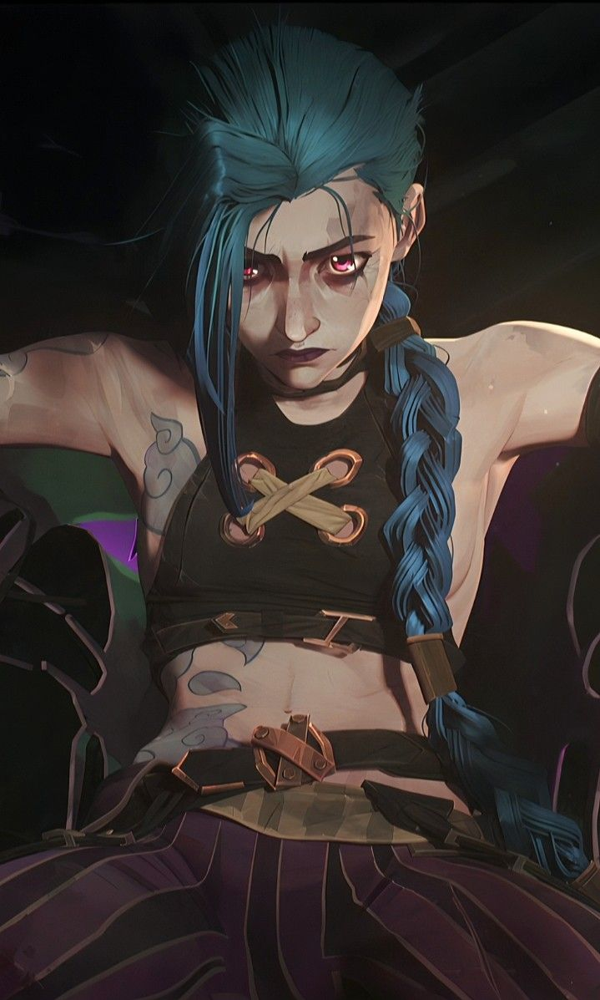
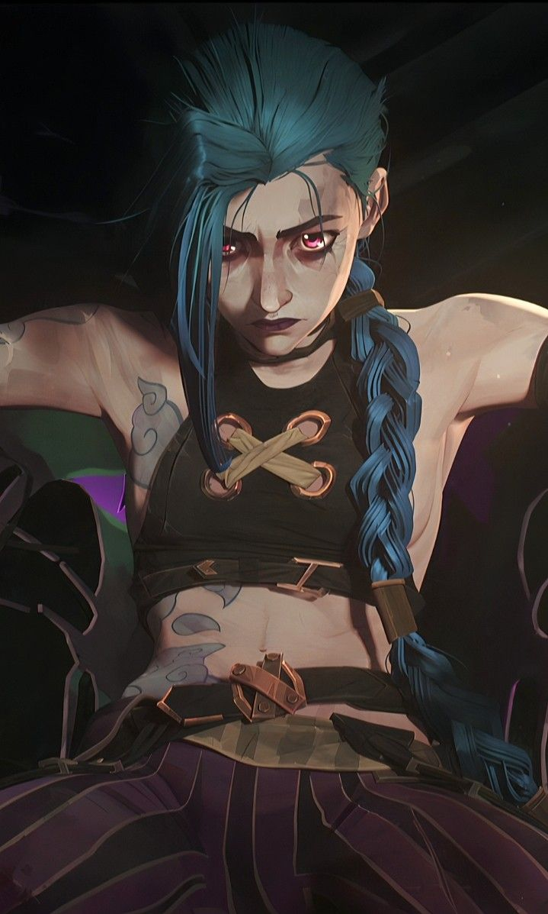

⚔️ Conoce a los Héroes de Arcane ⚡
Ekko

Ekko es un joven prodigio de Zaun que utiliza un dispositivo de manipulación del tiempo.
Con su ingenio y valentía, lucha contra las injusticias de su ciudad natal. Su habilidad para manipular el tiempo le permite alterar el curso de los eventos y cambiar su destino,
pero también le trae desafíos y dilemas éticos. En combate, Ekko usa un dispositivo llamado "Z-Drive",
un dispositivo de tiempo que le permite detener o retroceder el tiempo, dándole ventaja en la batalla.
Arma de ataque
Ekko utiliza el "Z-Drive", que le permite manipular el tiempo, así como una moto futurista que le ayuda a moverse rápidamente por Zaun. Su arma principal no es una espada o pistola, sino su habilidad para controlar el tiempo y alterar las circunstancias de una pelea.

Vi


Vi es una luchadora incansable y una de las figuras más destacadas de Piltover.
Criada en las duras calles de Zaun, se ha convertido en una combatiente formidable con un fuerte sentido de la justicia.
Su principal herramienta de combate son sus guantes mecánicos, unos enormes puños de metal que utilizan para desatar golpes devastadores en sus enemigos.
Aunque su vida está marcada por su lucha constante, Vi también enfrenta dilemas emocionales relacionados con su pasado y su relación con su hermana.
Arma de ataque
Los guantes mecánicos de Vi son su principal arma, diseñados para ofrecer un poder destructivo increíble. Su tamaño y fuerza les permiten realizar golpes devastadores, capaces de derribar a cualquier oponente.

Jayce

Jayce es un brillante inventor y defensor de Piltover. A pesar de su deseo de proteger a la ciudad, sus invenciones,
especialmente la tecnología Hextech, pueden tener consecuencias imprevistas. Jayce es conocido por su martillo transformable,
que puede convertirse en una poderosa herramienta de combate.
Además, su habilidad para manejar la tecnología Hextech le permite amplificar sus poderes en batalla,
lo que lo convierte en un formidable oponente.
Arma de ataque
Jayce utiliza un martillo transformable, el cual puede cambiar de forma para convertirse en un cañón de energía de largo alcance. Esta habilidad le da una gran ventaja tanto en combate cuerpo a cuerpo como a distancia.

Caitlyn

Caitlyn es la sheriff de Piltover, conocida por su destreza con el rifle y su capacidad para resolver casos complicados.
Armamentista y estratega, usa un rifle de largo alcance que le permite eliminar a sus enemigos a distancia con precisión. Además de ser una excelente tiradora, Caitlyn posee una gran habilidad para el análisis y la investigación, lo que la convierte en una de las figuras más eficaces en la lucha contra el crimen en Piltover.
Arma de ataque
Caitlyn utiliza un rifle de largo alcance, ideal para eliminar objetivos a distancia. Su precisión y capacidad para disparar desde lejos la convierten en una experta en asesinatos a larga distancia.
Viktor

Viktor es un científico brillante de Zaun que busca mejorar la humanidad mediante la ciencia.
Su obsesión con la mejora cibernética lo lleva a crear dispositivos de gran poder, pero también le plantea dilemas éticos.En combate,
Viktor utiliza un brazo cibernético, que le otorga una ventaja tecnológica al permitirle realizar ataques a distancia y controlar maquinaria.
También emplea su propia invención, el "Hexcore", un dispositivo que amplifica sus habilidades y que es clave para sus experimentos.
Arma de ataque
Viktor utiliza un brazo cibernético de alta tecnología que le otorga gran poder, además de su "Hexcore", un dispositivo que aumenta sus habilidades y lo convierte en un formidable oponente en combate, dándole control sobre máquinas y dispositivos electrónicos.
Jinx
 

Jinx es una de las villanas más caóticas y destructivas de Arcane. Su personalidad impredecible y su amor por la anarquía la llevan a usar un arsenal de armas altamente destructivas.
Jinx es conocida por su habilidad para usar explosivos, lanzacohetes y armas automáticas.
Su característica más temible es su actitud impredecible y su capacidad para causar el caos,
lo que la convierte en una amenaza constante para quienes la rodean.
Arma de ataque
Jinx usa una gran variedad de armas, desde explosivos hasta su lanzacohetes "Fishbones",
que le permite atacar a larga distancia con gran poder destructivo. También emplea armas automáticas para causar caos en cualquier situación.